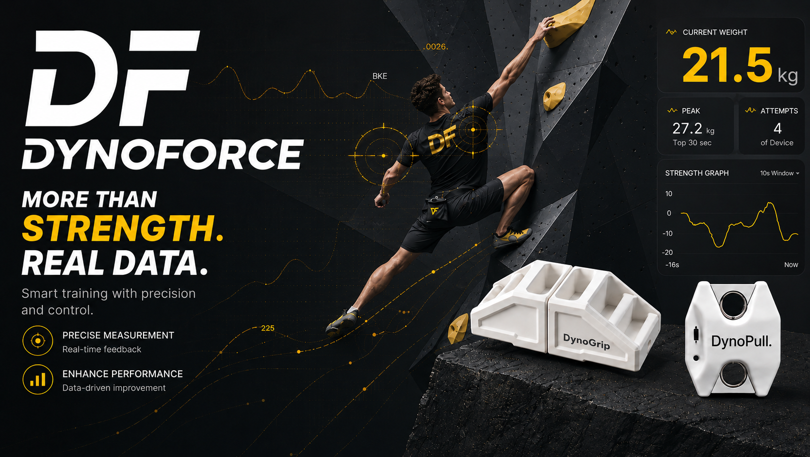
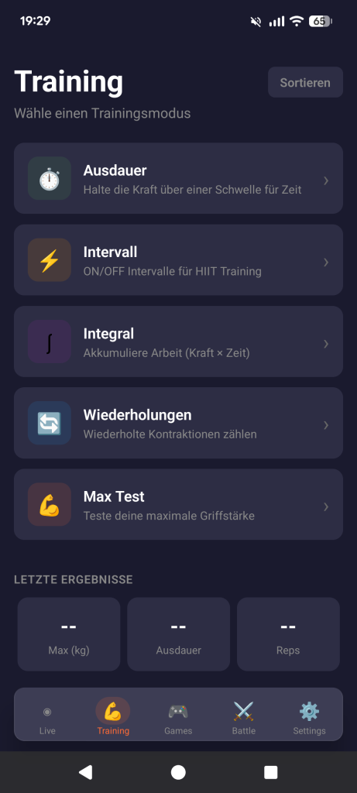
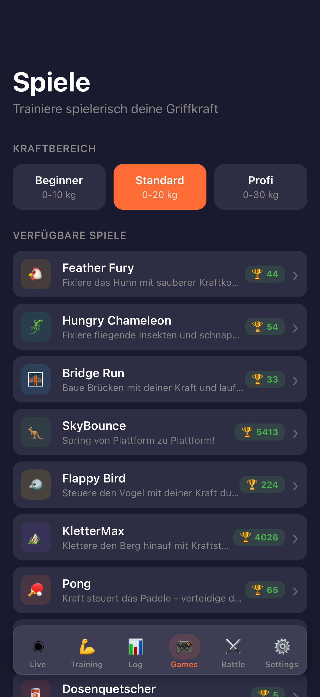
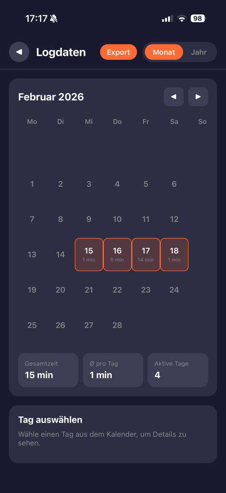

DynoGrip
Ein kompaktes, modulares Kraftmess- und Trainingsgerät für Finger-, Zug- und Krafttraining. Vollständig in die DynoForce App integriert.
Mehr zu DynoGrip →DynoForce ist ein modulares Kraftmess-System für Finger-, Zug- und Krafttraining. Entwickelt für Athleten, systematisches Training und Rehabilitation – für objektive Daten statt subjektivem Gefühl. Die Plattform ist für iPhone, Android und als Web App verfügbar.

DynoForce kombiniert spezialisierte Hardware mit einer zentralen App. So entsteht ein flexibles System für präzises Training, Tests und kontrollierte Belastungssteuerung.
Ein kompaktes, modulares Kraftmess- und Trainingsgerät für Finger-, Zug- und Krafttraining. Vollständig in die DynoForce App integriert.
Mehr zu DynoGrip →
Der DynoPull erfasst Zugkräfte bis 150KG – für Fingerboard, Kletterwand oder Kraftraum mit präziser Messung und klarer Auswertung.
Mehr zu DynoPull →Die App zeigt nicht nur Zahlen, sondern macht Training direkt verständlich: Live-Werte, Trainingsmodi, Spiele wie SkyBounce, Bridge Run, Feather Fury und Hungry Chameleon sowie langfristige Auswertung greifen ineinander.





Neben der mobilen App zeigt auch die Web-Oberfläche, wie stark das System über längere Zeiträume wirkt: Trainingsverläufe, persönliche Statistiken, Ranglisten und Fortschritt werden sichtbar und emotional nachvollziehbar.
Maximalkraft, Arbeit, Frequenz, Streak und Consistency in einer einzigen Übersicht.
Optionale Online-Funktionen wie Leaderboards und Community-Statistiken machen Fortschritt sozial erlebbar.
Die Stärke liegt in der Verbindung aus Device, App und langfristiger Auswertung.
Entdecke das DynoForce System und finde die passende Lösung für Finger-, Zug- und Krafttraining – klar, fokussiert und ohne unnötige Ablenkung.